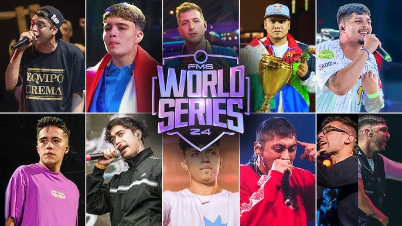

Lo Mas Nuevo
Así es la nueva Superliga de Freestyle, FMS World Series: qué es, participantes, fechas, sedes…
Se llevaba comentando durante bastante tiempo y al fin se ha hecho realidad. Urban Roosters juntará a 10 de los mejores freestylers para hacer una competición única hasta la fecha. La idea de una liga con los MC’s más potentes lleva siendo un sueño que ahora se cumple. Tras la buena acogida por parte del público de los traspasos y visto el buen rendimiento que han dado en cuanto a asistencia y visitas los últimos eventos internacionales, la empresa que ha profesionalizado el freestyle se embarca en un proyecto que puede elevar las batallas a otra dimensión.
¿Quiénes serán los participantes de la Superliga de Freestyle?
Urban Roosters ha anunciado a nueve de los diez competidores de la FMS World Series a través de sus redes sociales. El décimo saldrá del ganador de una batalla entre Teorema y Zasko, dos MC’s a los que la comunidad, con sus votos, ha dado una oportunidad de participar en la mejor liga del mundo. Larrix fue el primer competidor en ser oficializado para la Superliga. El argentino fue el campeón internacional de la última FMS y era evidente que estaría en el proyecto. Siguiendo los pasos de Larrix, El Menor, que fue el subcampeón de aquel día en Ciudad de México (y posteriormente galardonado como mejor freestyler de 2024 en los FMS Awards) también entra en la lista. Y hablando de campeones internacionales de FMS, otro que no podía faltar es Gazir, que cuenta con el anillo de mejor del mundo en la competición de Urban y que además ganó dos campeonatos nacionales contra todo un Chuty.

La sorpresa, aunque muchos ya le tenían en su predicciones, saltó cuando Kódigo fue anunciado de forma oficial como competidor de la Superliga. El regreso del argentino ha generado ilusión entre los seguidores de las batallas y ahora está por ver si podrá alcanzar el nivel de antaño y estar a la altura de los rivales tan fuertes a los que se medirá. Valles-T, dos veces campeón de la FMS Colombia, es otro de los nombres que debía estar en la mejor liga del mundo. Nitro, otro bicampeón de FMS, en este caso de Chile, también luchará por ser el rey. Como representante de FMS Caribe tendremos a Letra, que ya sabe lo que es ganar un anillo y cuenta con un trayectoria internacional considerable, aunque a priori es de los MC’s que más tendrá que demostrar. El que seguro que no tendrá nada que demostrar es Aczino. El mexicano, para muchos (y para él mismo) el mejor freestyler que se ha parido, vuelve a FMS para luchar por un título más de su interminable lista. Y si estaba Mau, tenía que estar Chuty. El vallecano, campeón del mundo de FMS y Red Bull, cierra la lista de una competición que promete ser épica.
Participantes de la FMS World Series
| Nombre | Pais |
| Larrix | Argentina |
| El Menor | Chile |
| Gazir | España |
| Kodigo | Argentina |
| Valles-T | Colombia |
| Nitro | Chile |
| Letra | Venezuela |
| Aczino | Mexico |
| Chuty | España |
| Por Definir | Por Definir |
¿Cómo será el formato de la la Superliga de Freestyle?
El formato de la Superliga de freestyle será el de liga regular que ya hemos visto años atrás. Sin embargo, en lugar de disputarse en nueve fechas, será en cinco, por lo que cada MC tendrá dos enfrentamientos por jornada. Además, Urban ha querido meter hype y ha anunciado que se esperan sorpresas a lo largo de la competición.
¿Dónde y cuándo se celebrará la Superliga de Freestyle?
Chile, Colombia, México, España y una sede que pronto será desvelada acogerán un torneo del que saldrá el mejor freestyler del mundo y que coronará a su campeón en el Palacio Vistalegre de Madrid. De esta forma, el calendario y los lugares donde se celebrará la Superliga quedarían de la siguiente manera:
| Jornada | Fecha | Sede |
| 1 | Por Definir | (Por Definir) |
| 2 | 20/12/2024 | (Sede por desvelar, Santiago de Chile) |
| 3 | 22/12/2024 | (Movistar Arena, Bogotá) |
| 4 | 15/12/2024 | (Domo Care, Monterrey) |
| 5 | 18/12/2025 | (Palacio Vistalegre, Madrid) |